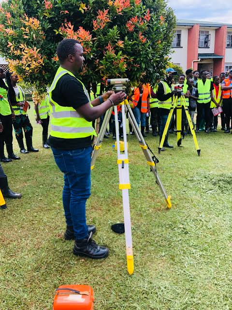
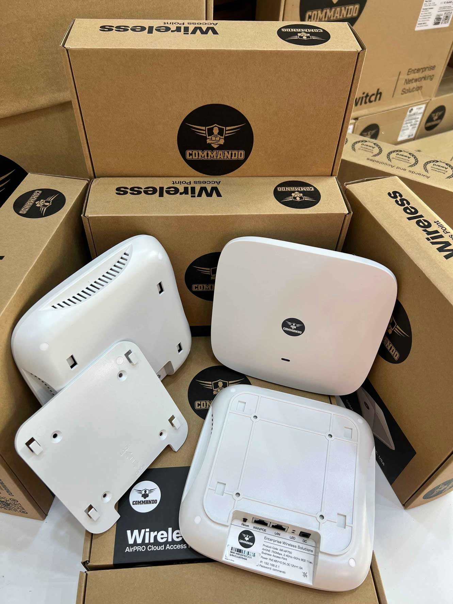
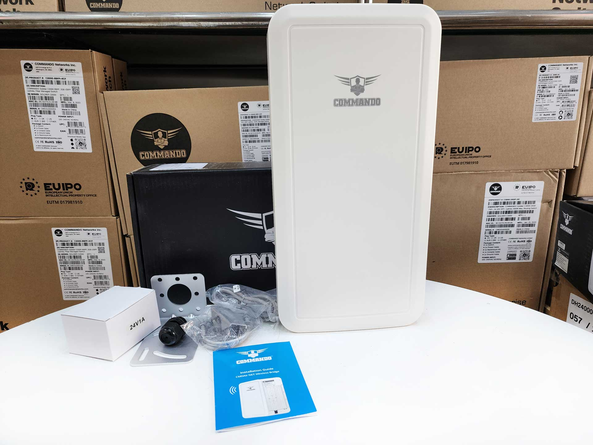
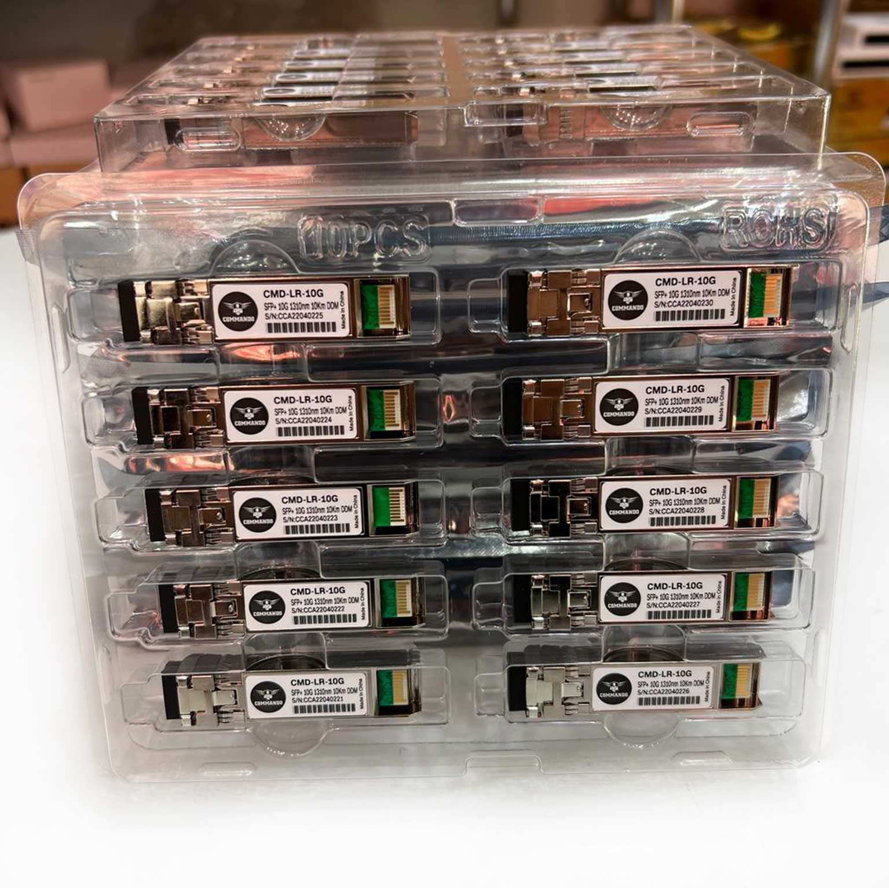
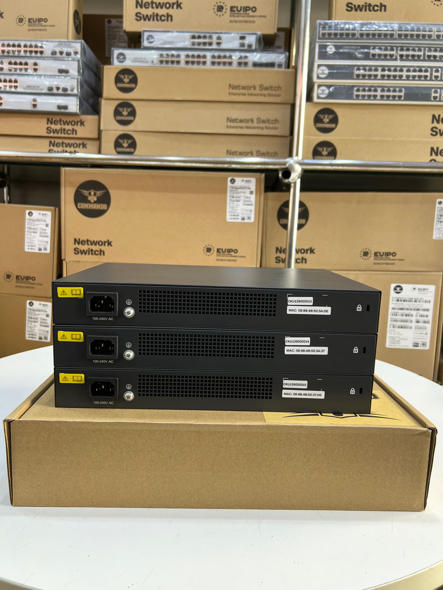
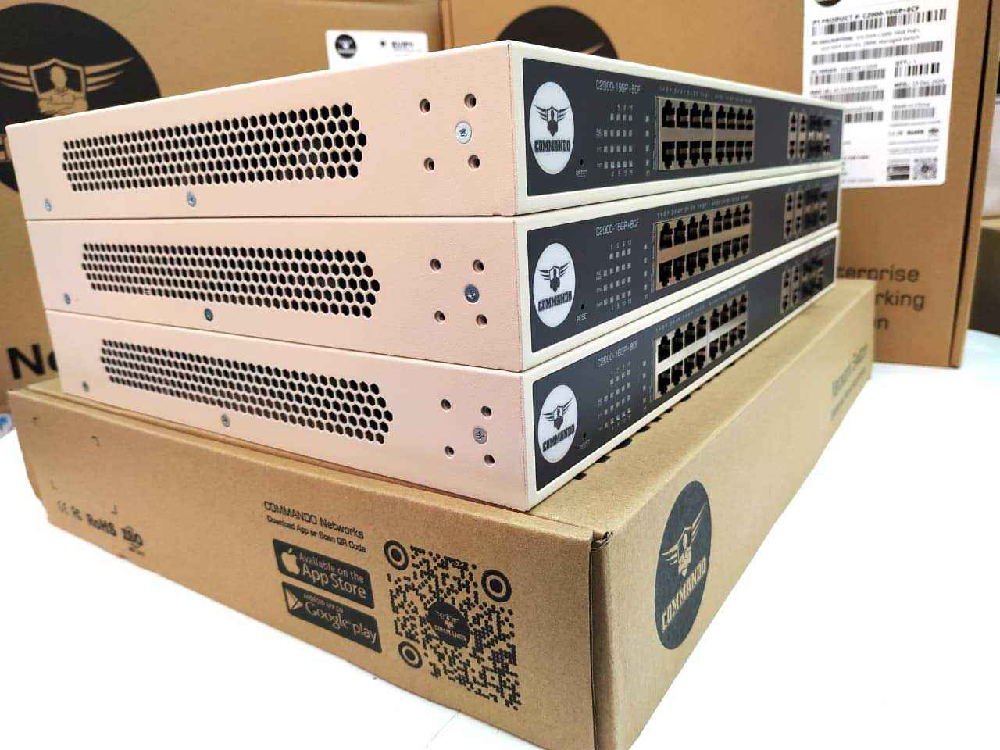

Environmental Conservation With Technology
Hydrometry
Monitoring and measuring water resources using modern hydrometric systems.
Telemetry
Remote data transmission systems for environmental and infrastructure monitoring.
Environmental Monitoring
Advanced solutions for tracking environmental conditions and climate data.
Engineering Solutions
Design and deployment of smart technological systems for field operations.

About Concept Box
Concept Box Limited provides innovative solutions in environmental monitoring, hydrometry and telemetry systems. Our goal is to combine modern technology with environmental conservation to help organizations monitor and manage natural resources more efficiently.
Learn MoreOur Services
We have the knowledge and tools to create specialized solutions that are catered to your particular needs whether you need real-time monitoring, environmental monitoring, or telecommunication solutions.
Telemetry
Our telemetry systems provide real-time monitoring and reliable data transmission for environmental and infrastructure monitoring.
Bathymetry
Accurate mapping and measurement of water bodies to support environmental analysis and engineering projects.
Environmental Monitoring
Solutions for collecting and analyzing environmental data to help organizations monitor natural conditions and comply with regulations.
Automated Weather Stations
Systems designed to measure and transmit weather data for research, forecasting and environmental planning.
Our Products
We supply reliable environmental monitoring and communication equipment designed to support data collection and field operations.

Indoor Access points

Outdoor Accesspoints

Trancievers

Routers
